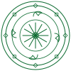
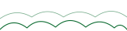
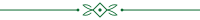

Thổ cẩm (cạp váy)
tho-cam-band.svg
Văn hoá Mường + Net-Zero · SVG line/flat print-safe (CMYK) · gắn theo theme-skin · ăn theo currentColor
motifs.css sau theme-skins.css.
Đặt class="theme-X" trên <body> → band & watermark tự đổi motif chủ đạo.
Mọi lớp motif pointer-events:none, không đè chữ/ảnh chính. Watermark mờ qua opacity (không blur).



Corner (4 góc) · Band (viền trên/dưới repeating) · Watermark (motif mờ nền).
Hoạ tiết góc corner-orn.svg xoay 0/90/180/270°. Dùng ôm khung trang in.
Thổ cẩm tile ngang seamless, viền trên/dưới. Lật scaleY cho mép dưới.
Trống đồng mờ ~8% làm nền, không đè chữ. Đổi motif qua class m-wm-*.
Icon inline ăn theo font-size/color:
.m-icon .m-ic-*
Mỗi khối mô phỏng nền theme: band trên + watermark + 2 góc tự đổi theo body.theme-X.